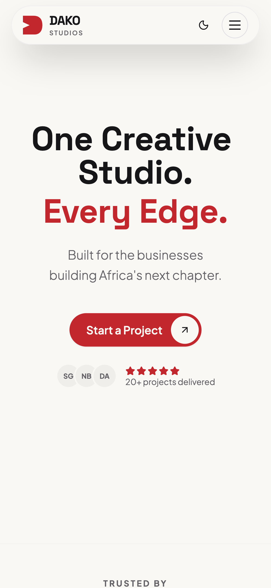

Download PNG
dako.studio — beta
We're building
in public.
It's not finished. That's the point.
9:41

aA
dako.studio
2 minutes. No sign-up.
Just your honest reaction.
Give feedback →
↑ tap the link above